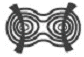
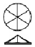

보석감정사(기능사) (2006-07-16 기출문제)
1과목: 보석학일반
1. 진주의 주요 성분은?
- 규소(SiO2)
- 탄산칼슘(CaCO3)
- 산화철(Fe2O3)
- 산화알루미늄(Al2O3)
(정답률: 95%)

2. 밝음(light), 중간(medium), 어두움(dark)으로 표현되는 용어와 관련된 것은?
- 색조
- 강도
- 명도
- 브릴리언시
(정답률: 90%)
3. 다음 중 빛의 반사에 의한 특수현상은?
- 래브라도레센스
- 이리디센스
- 오리엔트
- 샤토얀시
(정답률: 83%)
4. 다음 중 브릴리언시를 결정하는 요소가 아닌 것은?
- 굴절률
- 비율
- 면의 연마
- 비중
(정답률: 84%)
5. 터키석(turquoise)의 청색 원인이 되는 화학 성분은?
- 구리(Cu)
- 알루미늄(Al)
- 철(Fe)
- 인(P)
(정답률: 88%)
6. 호박을 기름에 넣고 열을 가하는 이유는?
- 외관을 맑게 하기 위해서
- 색상을 짙게 하기 위해서
- 색상을 옅게 하기 위해서
- 내포물을 제거하기 위해서
(정답률: 75%)
7. 합성법에 의해서 대표적으로 만들어지는 보석광물과 그 합성법의 연결이 잘못된 것은?
- 산화니켈 - 플럭스 성장법
- 사파이어 - 화염용융법(베르누이법)
- 수정 - 열수합성법
- 큐빅지르코니아 - 쵸크랄스키법
(정답률: 80%)
8. 밝은 적색 또는 자적색 루비로 이 중에는 분홍 사파이어로 분류된 것은?
- 타이 루비
- 실론 루비
- 동양 루비
- 버마 루비
(정답률: 77%)
9. 합성 루비와 천연 루비의 물리적 성질이 동일한 이유는?
- 색상이 같기 때문에
- 연마형태가 같기 때문에
- 화학성분과 구조가 같기 때문에
- 광학적 성질이 같기 때문에
(정답률: 96%)
10. 일반적으로 시금석 검사법에 사용되는 산의 종류는?
- 초산
- 황산
- 아황산
- 질산
(정답률: 88%)
11. 다음 중 토파즈의 특징적인 내포물은?
- 말꼬리상
- 연꽃 모양의 내포믈
- 두 개 내지 그 이상의 섞이지 않는 액체
- 실모양의 액체 및 기체
(정답률: 46%)
12. 다음 중 초음파 세척기로 세척하기에 부적합한 보석은?
- 루비
- 아쿠아마린
- 토파즈
- 알렉산드라이트
(정답률: 77%)
13. 우리나라에서 법적으로 인정한 합금이 순도가 아닌 것은?
- 24K
- 20K
- 16K
- 12K
(정답률: 80%)
14. 다음 중 원소의 원자가 불규칙적으로 배열되어 있는 비결정질 광물은?
- 수정
- 유리
- 토파즈
- 강옥
(정답률: 70%)
15. 피부에 직접 닿으면 변색 될 수 있는 보석은?
- 아쿠아마린
- 히데나이트
- 지르콘
- 진주
(정답률: 92%)
2과목: 다이아몬드감정법
16. 다음 보석 중 접합처리를 많이 하는 보석은?
- 헤마타이트
- 오팔
- 다이아몬드
- 진주
(정답률: 92%)
17. 크리소프레이스(chrysoprase)는 무슨 광물의 변종인가?
- 칼세도니(chalcedony)
- 아게이트(agate)
- 장석(feldspar)
- 크리소베릴(chrysoberyl)
(정답률: 81%)
18. 두 개의 보석재를 열로 융합시키거나 무색의 접착제로 접합시키는 방법은?
- 더블릿
- 텀블 폴리싱
- 부루팅
- 합성석
(정답률: 92%)
19. 취급 소홀이나 착용상의 부주의로 생길 수 있는 블레미시가 아닌 것은?
- 스크래치
- 어브레이젼
- 폴리시 라인
- 피트
(정답률: 85%)
20. 루페(Loupe)에 대한 설명 중 틀린 것은?
- 일반적인 사용되는 배율은 보통 10배이다.
- 다이아몬드 감정에는 완전히 교정된 트리플릿 렌즈를 사용한다.
- 비율이 10배인 렌즈의 초점거리는 1인치이다.
- 확대배율이 높을수록 초점거리가 멀어진다.
(정답률: 86%)
21. 레이져 드릴 홀(Laser drill hole)의 처리 방법으로 가장 적합한 것은?
- 표백처리
- 필드처리
- 방사선 처리
- 코팅처리
(정답률: 66%)
22. 클래러티의 기록과 작도(plotting)하는 목적에 해당되지 않는 것은?
- 감정가 결정
- 확증과 상태기록
- 등급결정의 뒷받침
- 식별에 대한 수단
(정답률: 85%)
23. 라운드 브릴리언트 컷의 다이아몬드에서 이상적인 테이블 크기, 크라운 각도, 퍼빌리온 깊이, 거들 두께, 큐렛 크기로 이루어진 것은?
- 50~52%, 32~34°, 41%, 얇다, 없다
- 61~64%, 34~35°, 42%, 두껍다, 없다
- 53~58%, 34~35°, 43%, 중간, 없다
- 53~60%, 32~34°, 44%, 약간 두껍다, 중간
(정답률: 81%)
24. 다음 중 컬러 등급 결정에 영향을 주는 요인이 아닌 것은?
- 내포물의 양과 위치
- 프로포션
- 다이아몬드의 크기
- 인클루젼
(정답률: 46%)
25. 연마비율 등급에 포함되어야 하는 것과 관련이 없는 것은?
- 거들 직경에 대한 테이블의 대각선 길이의 비
- 거들 직경에 대한 전체 높이의 비
- 크라운 크기와 거들 두께의 비
- 큐릿 크기
(정답률: 45%)
26. 다이아몬드가 갖는 블레미시 특징이 아닌 것은?
- 외부적인 클래리티이다.
- 작도 시 대부분 적색으로 표시한다.
- 10배 확대 하에서는 깊이가 보이지 않는다.
- 착용이나 커팅 과정 또는 결정 구조의 결과로 생긴다.
(정답률: 85%)
27. 다이아몬드의 결정 정계는?
- 등축정계
- 사방정계
- 정방정계
- 육방정계
(정답률: 90%)
28. 라운드 브릴리언트 컷의 다이아몬드에서 테이블 %를 계산하는 방법은 테이블 크기를 무엇으로 나눈 것인가?
- 전체 깊이 치수
- 거들 직경의 가장 작은 치수
- 거들 직경의 가장 큰 치수
- 거들 직경의 가장 작은 치수와 가장 큰 치수의 평균
(정답률: 94%)
29. 다이아몬드의 맑기를 나타내는 기호로, 10배의 확대경으로 검사하였을 경우 내외부에 흠을 찾아 볼 수 없을 때 사용하는 것은?
- VVS
- VS
- F, FL
- I
(정답률: 90%)
30. 다이아몬드의 형광에서 가장 다양한 강도로 반응하는 색상은?
- 녹색
- 청색
- 황색
- 적색
(정답률: 89%)
3과목: 보석감별법
31. 다이아몬드 원석의 성장 시 결정면에 성장 흔적을 남기게 되는데, 육면체의 결정면에 나타나는 성장마크는?
- 사각형
- 삼각형
- 원형
- 일자형
(정답률: 69%)
32. 다이아몬드의 중량을 정확하게 추정하는데 있어서 가장 어려운 것은?
- 뒤가 막힌 베즐 셋팅
- 뒤가 막힌 프롱 셋팅
- 뒤가 막히지 않은 베즐 셋팅
- 뒤가 막히지 않은 프롱 셋팅
(정답률: 83%)
33. 다이아몬드 컬러 등급시 마스터 스톤(master stone)으로 가장 적합한 프로포션(proportion)은?
- 크라운 높이 : 10%, 퍼빌리언 깊이 : 40%, 거들 : 약간 두껍다
- 크라운 높이 :12%, 퍼빌리언 깊이 : 44%, 거들 : 야간 두껍다
- 크라운 높이 : 18%, 퍼빌리언 깊이 : 47%, 거들 : 약간 두껍다
- 크라운 높이 : 10%, 퍼빌리언 깊이 : 48%, 거들 : 약간 두껍다
(정답률: 93%)
34. 형광을 판단하는데 있어서 좋은 결과를 얻을 수 있는 돌과 광원과의 적당한 거리는?
- 4~5inch
- 7~8inch
- 10inch
- 12inch
(정답률: 73%)
35. 굴절률이 1.762~1.770으로 확인 되는 보석은?
- 가닛(Garnet)
- 베릴(Beryl)
- 커런덤(Corundum)
- 페리도트(Peridot)
(정답률: 79%)
36. 다음 중 보석감별의 첫 단계는?
- 육안검사
- 확대검사
- 굴절률 측정
- 편광검사
(정답률: 100%)
37. 굴절계에서 굴절률을 읽는 방법이 아닌 것은?
- 30/70법
- 명멸(blink)법
- 평균법(average)
- 50/50법
(정답률: 91%)
38. 편광기를 다크포지션에 놓고 광축을 조사했더니 다음과 같은 모양들이 나타났다. 이 중에서 수정으로 볼 수 있는 것은? (단, 1축성 황소눈)

(정답률: 73%)
39. 이색경으로 관찰할 수 있는 현상이 아닌 것은?
- 다색성
- 이색성
- 삼색성
- 광축각
(정답률: 84%)
40. 에메랄드는 육안으로 볼 수 있는 균열이 발달하는 경우가 많다. 이를 은폐하기 위한 처리방법은?
- 밀납처리
- 유동파라핀처리
- 오일처리
- 알콜처리
(정답률: 98%)
41. 경옥의 착색여부를 알 수 있는 효과적인 검사법은?
- 편광기 관찰
- 굴절률 측정
- 비중 측정
- 분광기 검사
(정답률: 84%)
42. 자외선 형광을 실험할 때 가장 좋은 조건은?
- 일광 아래
- 어두운 곳
- 형광등 조명 아래
- 백열등 조명 아래
(정답률: 90%)
43. 다음 중 삼상 내포물이 모두 포함되어 있는 보석은?
- 칼사이트
- 아이올라이트
- 서펜틴
- 에메랄드
(정답률: 100%)
44. 산호의 열반응 검사에서 반응하는 냄새는?
- 단백질 냄새
- 송진냄새
- 기름 냄새
- 자극적인 냄새
(정답률: 92%)
45. 몇 몇 변종(Variety)들에서 볼 수 있는 보기 드문 특이한 광학효과를 무엇이라 하는가?
- 굴절율(Refractive Index)
- 다색성(Pleochroism)
- 광택(Polish luster)
- 특수효과(Phenomena)
(정답률: 87%)
4과목: 보석가공기법
46. 다음 중 비중 검사 시 주의를 요하는 보석은?
- 플로라이트
- 접합석
- 수정
- 문스톤
(정답률: 89%)
47. 형광기에 의한 감별기구 사용시 눈의 망막에 해로우므로 직접 눈에 쬐어서는 안 되는 광원은?
- 장파(LW)
- 단파(SW)
- 형광
- 인광
(정답률: 79%)
48. 비중 측정시 정수법을 사용하는 것이 바람직한 보석은?
- 합성 루비
- 합성 스피넬
- 진주
- 스타 루비
(정답률: 37%)
49. 외부반사로 스펙트럼을 관찰할 때 분광기와 보석의 각도는?
- 45°
- 55°
- 75°
- 90°
(정답률: 69%)
50. 정수법에 의한 비중측정은 어떤 크기의 돌일 경우에 가장 정확한 결과를 얻을 수 있는가?
- 1/10ct 이하의 돌
- 1.4ct 이하의 돌
- 1/2ct 이하의 돌
- 1ct 이상의 돌
(정답률: 88%)
51. 다음 검사방법 중 보석에 피해를 줄 수 있는 검사방법은?
- 열전도 검사
- 조흔 검사
- 자성 검사
- 비중 검사
(정답률: 98%)
52. 정은(sterling sliver)에는 몇 %의 은이 함유되어 있는가?
- 97.5%
- 95%
- 92.5%
- 90%
(정답률: 98%)
53. 이중 캐보션의 변형으로 상ㆍ하부가 동일 할 정도로 얇고 둥글게 되어 있으며 오팔을 연마하는데 주로 사용하는 방식은?
- 역 캐보션(reverse cabochon)
- 평 캐보션(lentil cabochon)
- 오목 캐보션(hollow cabochon)
- 단순 캐보션(simple cabochon)
(정답률: 91%)
54. 라운드 브릴리언트 연마에서 아주 작은 퍼빌리언의 맨 끝 면으로, 거들 평면과 평행한 면은?
- 스타면(star facet)
- 퍼빌리언(pavilion)
- 큐릿(culet)
- 베즐면(bezeled facet)
(정답률: 82%)
55. 원형 구슬 형태의 보석을 천공할 때 사용하는 공구는?
- 탁상 그라인더
- 드릴
- 핸드피스
- 지그
(정답률: 92%)
56. 다음 보석 중 끓여서 세척하는 방법을 쓰면 안 되는 것은?
- 오팔
- 에메랄드
- 터키석
- 토파즈
(정답률: 77%)
57. 성채효과가 있는 보석가공에 적합한 연마형은?
- 패싯형
- 캐보션형
- 하트형
- 오벌형
(정답률: 100%)
58. 귀 볼을 뚫어 착용하는 귀걸이 형으로 귀고리 앞부분의 장식이 귓볼에서부터 늘어지는 형은?
- 조임형
- 나사형
- 자석형
- 드롭형
(정답률: 94%)
59. 드릴 부착 방법 설명으로 잘못된 것은?
- 길이가 30mm, 지름 0.8~1.0mm가 되는 드릴을 준비한다.
- 호온을 버너로 가열한다.
- 용제를 바른다.
- 호온에 드릴을 나사로 고정한다.
(정답률: 53%)
60. 다음 그림과 같은 형태의 컷은?

- 6면 로즈 컷(six-facet rose cut)
- 싱글 컷(single cut)
- 마그나 컷(magna cut)
- 올드 마인 컷(old-mine cut)
(정답률: 96%)